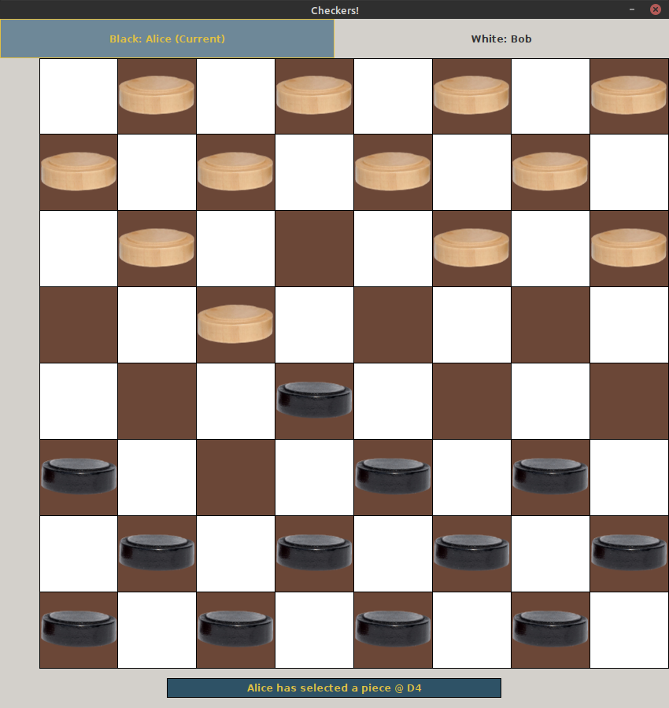

Peter Marley's Portfolio
Crasio Calculator

Crasio calculator is a simple web calculator that implements a simple
calculator that respects order of operations (PEDMAS). It was initially an exersize of The Odin
Project, which did not expect order of operations to be respected, that I went further with.
Budget Keeper

I was sick of all the bloated budgeting software I had tried so I decided to make my own. You enter what you spend and receive, and it keeps track. Implemented in Java, using an sqlite3 database and JavaFX GUI.
Checkers

The first complex (?) program I ever made. Locally played 2-player Checkers. Enforces all rules.